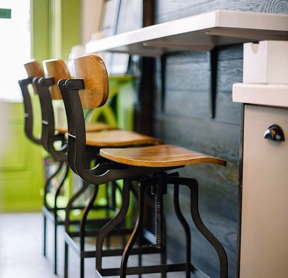

Про нас
Горня – це місце, де професіоналізм нерозривно пов'язаний з любов'ю до кави. Цей тандем органічно поєднується з найкращим обладнанням, яке доступне на ринку, як для обсмажування, так і для приготування кави. Нашим пріоритетом є вибір якісного та різноманітного зерна, що задовільнить будь-який, навіть найвибагливіший смак. Ми створюємо світ, в якому є тільки смачна кава.